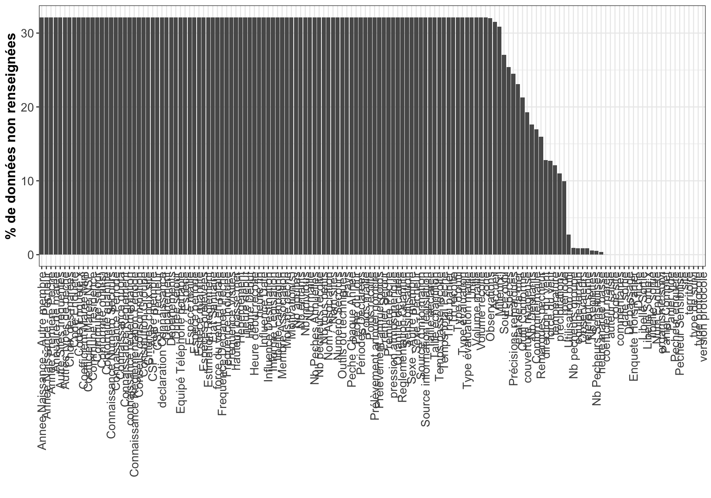

Contexte
La réalisation des données d’usage nécessite au préalable de décrire les données présentes dans la base ESTAMP. Cette description permettra de mettre en avant les points forts et les points faibles permettant ainsi d’élaborer d’éventuelles solutions pour améliorer la robustesse[^2] de la base.
Les données ont été extraites le 04-05-2020 via le site web (https://estamp.afbiodiversite.fr/).
L’extraction est composée de 3 fichiers :
ProtocolesEnquetesPaP.pdf
termine
valideLe jeu de données est composé de 5997 lignes (= observations) et 144 colonnes (= variables)
| Variable | Class | Nombre_Elements | Nombre_NA | Exemples |
|---|---|---|---|---|
| libelle_sortie | character | 5997 | 0 | Le Veillon_22/09/2016_Justine VALLEE_S00006 |
| Libellé Sortie.x | character | 5997 | 0 | Le Veillon_22/09/2016_Justine VALLEE_S00006 |
| Code Enquète.x | character | 0 | 5997 | : |
| Observateurs | character | 81 | 162 | Justine VALLEE |
| Num Enquéte | character | 5997 | 0 | S00006 |
| Heure Début | hms | 0 | 5997 | : |
| Enquete Hors Panier | character | 1 | 0 | Non renseigné : 5997 |
| Panier Complet | character | 1 | 0 | Non renseigné : 5997 |
| Pecheur Sensibilisé | character | 1 | 0 | Non renseigné : 5997 |
| Pecheur enqueté | character | 1 | 0 | Non renseigné : 5997 |
| Constitution Groupe | character | 0 | 5997 | : |
| Nb adultes | integer | 0 | 5997 | : |
| Nb enfants | integer | 0 | 5997 | : |
| Nb tous petits | integer | 0 | 5997 | : |
| Nb pecheurs groupe | integer | 30 | 173 | 2 |
| Nb Pecheurs Sensibilises | integer | 87 | 97 | 2 |
| Nb Reglettes | integer | 78 | 105 | 1 |
| Nb Depliants | integer | 8 | 3287 | 0 : 2096 - 1 : 497 - 2 : 97 - 3 : 9 - 4 : 6 - 5 : 2 - 7 : 2 - 12 : 1 |
| Observations | character | 1 | 5973 | Pêche dans concession : 24 |
| Annuaire de marée | character | 0 | 5997 | : |
| Etat Sanitaire | character | 0 | 5997 | : |
| Source d’information | character | 0 | 5997 | : |
| Equipé Téléphone portable | character | 0 | 5997 | : |
| Connaissance Numéro Secours | character | 0 | 5997 | : |
| Numéro Secours | character | 0 | 5997 | : |
| Critéres choix site | character | 0 | 5997 | : |
| ID fiche | character | 5997 | 0 | 316971 |
| type de suivi | character | 1 | 0 | Suivi des enquêtes pêcheurs à pied : 5997 |
| date sortie | POSIXct | 243 | 0 | 2016-09-22 |
| heure début | hms | 0 | 5997 | : |
| heure fin | hms | 0 | 5997 | : |
| coefficient marée | integer | 62 | 2 | 70 |
| heure marée basse | hms | 237 | 72 | 15:37:00 |
| hauteur basse mer | numeric | 0 | 5997 | : |
| période | character | 3 | 1856 | Semaine : 941 - Vacances : 2896 - Week-end ou Jour Férié : 304 |
| libellé campagne | character | 0 | 5997 | : |
| référent sortie | character | 81 | 162 | Justine VALLEE |
| équipe terrain | character | 81 | 162 | Justine VALLEE |
| territoire | character | 2 | 0 | Estuaire de la Gironde et Mer des Pertuis : 4463 - Golfe Normand Breton : 1534 |
| code site | character | 61 | 0 | EGMP_003 |
| site | character | 61 | 0 | Le Veillon |
| zone | character | 0 | 5997 | : |
| type protocole | character | 1 | 0 | Enquête sensibilisation : 5997 |
| version protocole | character | 1 | 0 | LifePAP : 5997 |
| auteur saisie | character | 1 | 0 | SYSTEME : 5997 |
| organisme suivi | character | 2 | 0 | Mission d’étude du golfe normand-breton : 1534 - Parc naturel marin de l’estuaire de la Gironde et de la mer des Pertuis : 4463 |
| couverture nuageuse | character | 4 | 3597 | 0-25% (Peu ou pas nuageux) : 326 - 25-75% (Nuageux) : 1324 - 75-100% (Très nuageux) : 617 - Brouillard : 133 |
| précipitations | character | 5 | 2052 | Averses violentes ou orageuses - Grêles ou neige : 46 - Pas de précipitation : 3778 - Pluie continue : 29 - Pluie fine : 80 - Pluies éparses : 12 |
| pression atmosphérique | numeric | 0 | 5997 | : |
| température | numeric | 55 | 2259 | 20 |
| force du vent | character | 6 | 2370 | 1-Très légère brise-1 à 5 km/h-Mer ridée : 84 - 2-Lègère brise-6 à 11 km/h-Vaguelettes : 480 - 3-Petite brise-12 à 19 km/h-Très petites vagues. Déferlement. : 1800 - 4-Jolie brise-20 à 28 km/h-Petites vagues. Moutons. : 991 - 5-Bonne brise-29 à 38 km/h-Vagues modérées. : 269 - 6-Vent frais-39 à 49 km/h-Crêtes d’écume blanches. : 3 |
| force du vent en rafale | character | 0 | 5997 | : |
| direction du vent | character | 8 | 2394 | Est : 199 - Nord : 73 - Nord-Est : 509 - Nord-Ouest : 1311 - Ouest : 603 - Sud : 196 - Sud-Est : 215 - Sud-Ouest : 497 |
| état de la mer | character | 4 | 4306 | 0-calme-0 m : 152 - 1-ridée-0 à 0,1 m : 778 - 2-belle-0,1 à 0,5 m : 487 - 3-peu agitée-0,5 à 1,25 m : 274 |
| commentaires | character | 1 | 0 | Reprise de données Enquete |
| : 5997 | ||||
| Milieu(x) | character | 5 | 5760 | Champs de blocs : 30 - Champs de blocs | Massifs d’hermelles : 73 - Concessions de culture : 100 - Herbiers zostères : 17 - Massifs d’hermelles : 17 |
| Espéces | character | 37 | 4739 | Palourdes croisées | Praire |
| Outils ou techniques | character | 0 | 5997 | : |
| Conformité outil(s) | character | 0 | 5997 | : |
| Estimation Reglement | character | 0 | 5997 | : |
| Connaissance Reglement | character | 0 | 5997 | : |
| Premiere Peche | character | 0 | 5997 | : |
| Annee Premiere Peche | integer | 0 | 5997 | : |
| Peche Chaque Annee | character | 0 | 5997 | : |
| Frequence Declaree Peche | numeric | 0 | 5997 | : |
| Mois de peche | character | 0 | 5997 | : |
| Nb Peches Annuelles | numeric | 0 | 5997 | : |
| Péche du jour | character | 0 | 5997 | : |
| Frequence Indiquee | character | 0 | 5997 | : |
| Espéces prélevées | character | 0 | 5997 | : |
| Prélèvement annuel poids | character | 0 | 5997 | : |
| Prélèvement annuel nombre | character | 0 | 5997 | : |
| Choix des marées | character | 0 | 5997 | : |
| Coefficient Maree Mini | integer | 0 | 5997 | : |
| Coefficient Maree NSP | character | 0 | 5997 | : |
| Autre Sites fréquentés | character | 0 | 5997 | : |
| Départements | character | 0 | 5997 | : |
| Nom sites | character | 0 | 5997 | : |
| Motivation(s) | character | 0 | 5997 | : |
| Autres types de peche | character | 0 | 5997 | : |
| Heure début récolte | hms | 0 | 5997 | : |
| Temps passé récolte | numeric | 0 | 5997 | : |
| Temps total Peche | numeric | 0 | 5997 | : |
| Nb pêcheurs récolte | numeric | 0 | 5997 | : |
| Panier vide | character | 3 | 0 | Non : 2684 - Non renseigné : 3311 - Oui : 2 |
| Conformité maille | character | 3 | 3169 | Conformité < 50% : 436 - Conformité > 90% : 1421 - Conformité entre 50% et 90% : 971 |
| Conformité quantité | character | 0 | 5997 | : |
| Tri du panier | character | 0 | 5997 | : |
| Espece | character | 0 | 5997 | : |
| Poids récolte | numeric | 0 | 5997 | : |
| Nb individus | numeric | 0 | 5997 | : |
| Volume récolté | numeric | 0 | 5997 | : |
| Type évaluation | character | 0 | 5997 | : |
| Poids maille | character | 0 | 5997 | : |
| Nb maille | numeric | 0 | 5997 | : |
| Volume maille | numeric | 0 | 5997 | : |
| Type évaluation maille | character | 0 | 5997 | : |
| Taille échantillon | numeric | 0 | 5997 | : |
| Commune résidence | character | 0 | 5997 | : |
| Département | character | 0 | 5997 | : |
| Pays | character | 0 | 5997 | : |
| De passage | character | 1 | 0 | en séjour sur une commune : 5997 |
| Commune séjour | character | 0 | 5997 | : |
| Durée séjour | integer | 0 | 5997 | : |
| Hebergement | character | 0 | 5997 | : |
| Premier Séjour | character | 0 | 5997 | : |
| Fréquence Visites | numeric | 0 | 5997 | : |
| Influence Destination | character | 0 | 5997 | : |
| Influence Date | character | 0 | 5997 | : |
| Sexe - Pécheur | character | 0 | 5997 | : |
| Annee Naissance - Pécheur | integer | 0 | 5997 | : |
| CSP - Pécheur | character | 0 | 5997 | : |
| Sexe - Autre membre | character | 0 | 5997 | : |
| Annee Naissance - Autre membre | integer | 0 | 5997 | : |
| CSP - Autre membre | character | 0 | 5997 | : |
| Tri récolte | character | 0 | 5997 | : |
| Accueil | character | 1 | 5877 | Refus : 120 |
| Sensibilisation | character | 0 | 5997 | : |
| Remarques pécheur | character | 4 | 2976 | Conflits d’usage : 87 - Etat sanitaire : 113 - Réglementation : 1991 - Ressource/Environnement : 830 |
| Précisions remarques | character | 1016 | 4574 | Intéressé par le panneau mis en place |
| Libellé Sortie | character | 5997 | 0 | Le Veillon_22/09/2016_Justine VALLEE_S00006 |
| Code Enquète | character | 0 | 5997 | : |
| Membre Association | character | 0 | 5997 | : |
| Nom Association | character | 0 | 5997 | : |
| Espéce maille | character | 0 | 5997 | : |
| declaration Connaissance | character | 0 | 5997 | : |
| Taille déclarée | integer | 0 | 5997 | : |
| connaissance réglementation | character | 0 | 5997 | : |
| Utilisation outil | character | 3 | 512 | Non : 4451 - Oui : 894 - Oui mais pas aujourd’hui : 140 |
| Source outil | character | 7 | 5047 | Anatomique (phalange, largeur de paume, pouce ) : 18 - Artisanal : 371 - Autre type de réglette : 83 - Commerce : 19 - Pied à coulisse FNPPSF : 43 - Réglette à visuels (Type Vivarmor) : 35 - Reglette LIFE : 381 |
| Type d’outil | character | 0 | 5997 | : |
| Outil Conforme | character | 2 | 3973 | Non : 1472 - Oui : 552 |
| Espèce quantité | character | 0 | 5997 | : |
| Connaissance quota | character | 0 | 5997 | : |
| Quantité déclarée | integer | 0 | 5997 | : |
| Unite | character | 0 | 5997 | : |
| Reglementation Quantité | character | 0 | 5997 | : |
| Espèce période | character | 0 | 5997 | : |
| Connaissance Période | character | 0 | 5997 | : |
| Périodes Déclarées | character | 0 | 5997 | : |
| Connaissance Règlementation Période | character | 0 | 5997 | : |
| Informé Législation | character | 0 | 5997 | : |
| Source information législation | character | 0 | 5997 | : |
| Conseils consommation | character | 0 | 5997 | : |
